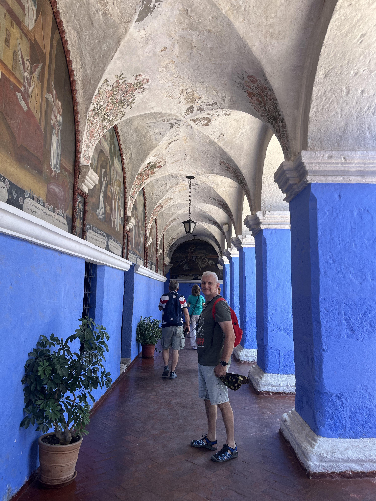
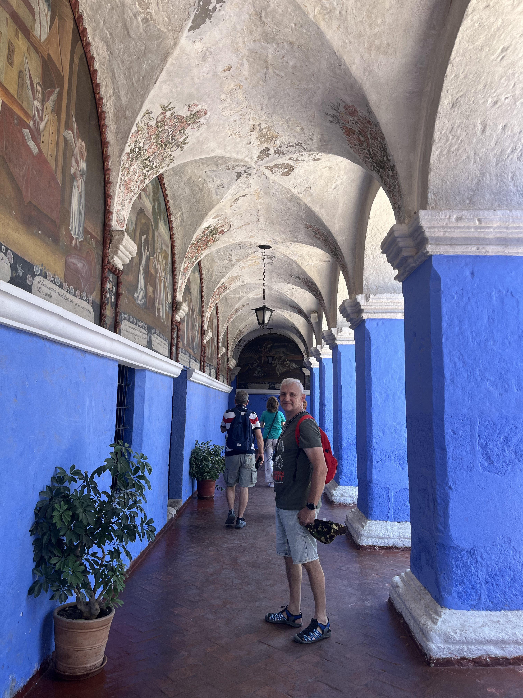
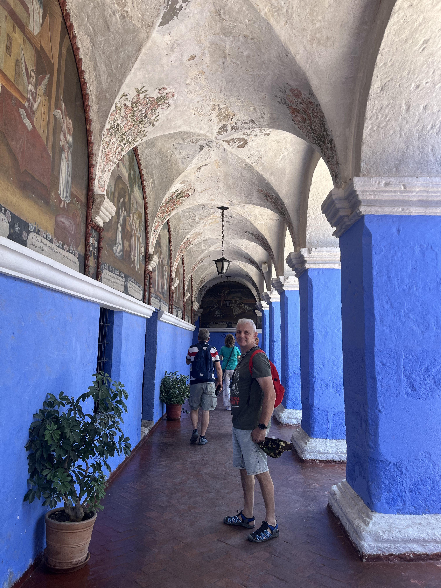
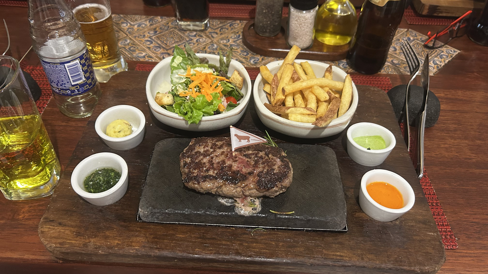
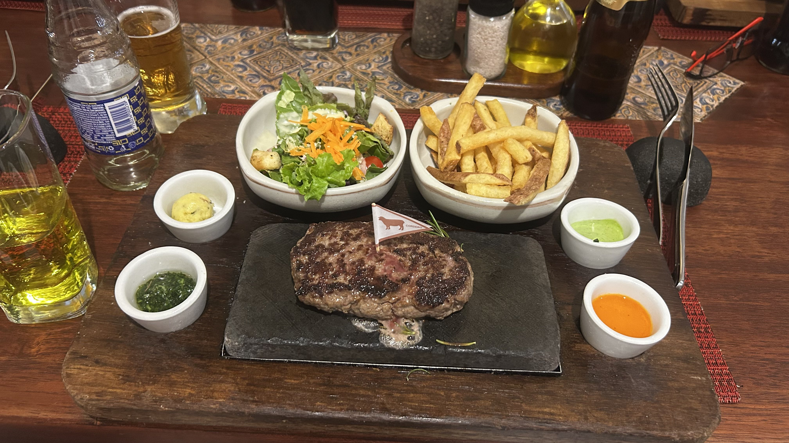

Poranek w Arequipie przywitał nas łagodnym słońcem, które odbijało się od jasnych budowli — starych kościołów, murów i kolonialnych kamienic. Arequipa — często nazywana „Białym Miastem” — zrobiła na nas ogromne wrażenie. Jej architektura, zbudowana z twardej, białej skały wulkanicznej, nadaje miastu czystość, jak gdyby kamień i światło były złączone w jedno.
Spacer po dzielnicy Yanahuara był jak podróż do innego czasu. Wąskie brukowane uliczki, kamienne schody, małe kościółki — a w oddali, nad dachami miasta, wyłaniały się sylwetki trzech wulkanów: Chachani, El Misti i Pichu Pichu. Zielonkawe wzgórza i ośnieżone szczyty tworzyły tło dla miasta z białego kamienia — kontrast drzew i wulkanicznych grzbietów robił wrażenie surrealistyczne.
Spacer po dziedzińcach Klasztoru Świętej Katarzyny był jak wejście do labiryntu z innej epoki: krużganki, kolumny, ciche zakamarki, światło przeciskające się przez sklepienia — wszystko sprawiało wrażenie podróży w czasie. Wśród ciszy słychać było jedynie echo naszych kroków.

Lunch w lokalnej restauracji — stek z alpaki, serwowany na gorącym kamieniu wulkanicznym — miał smak ziemi, dymu i surowej energii Andów. Każdy kęs był jak ceremonia: mięso kruche, intensywne w smaku, z nutą dymu, ziół i lokalnych przypraw. Rozmowy przy stole toczyły się żywo: o wulkanach, o podróży, o tym, co nas czeka dalej.

 

Wieczorem przemaszerowaliśmy przez oświetlone ulice — latarnie rzucały ciepłe światło, a powietrze pachniało kolonią i kamieniem. W oddali wulkan El Misti górował nad miastem — jego sylwetka była jak strażnik starych czasów.